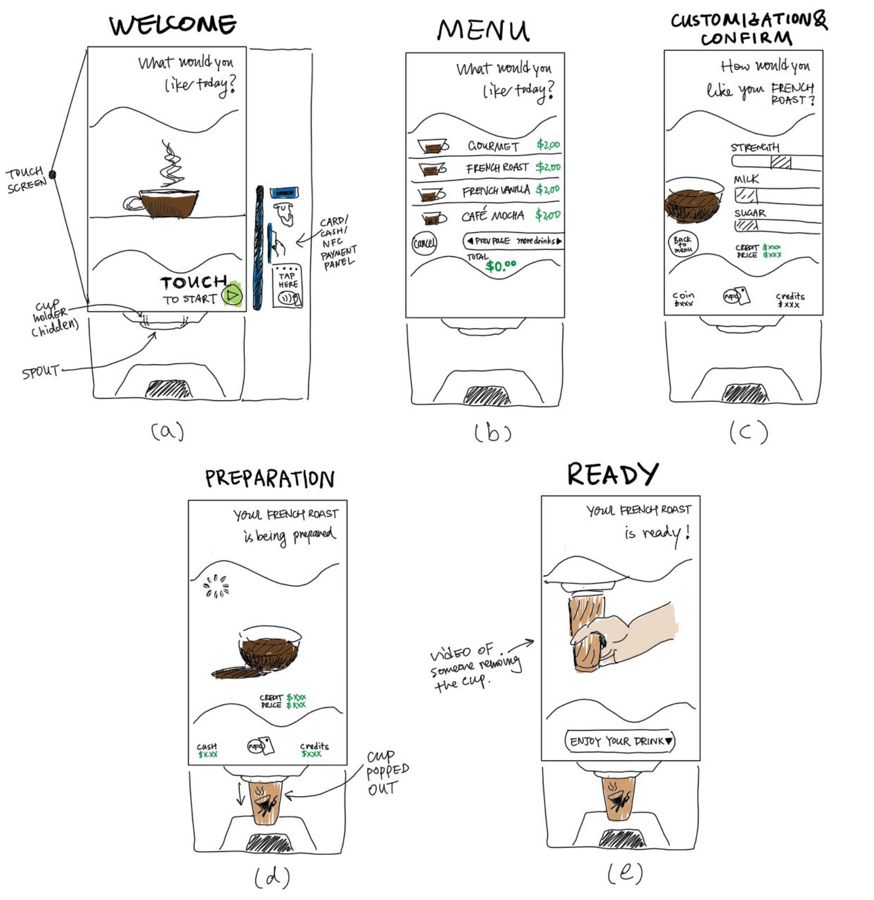
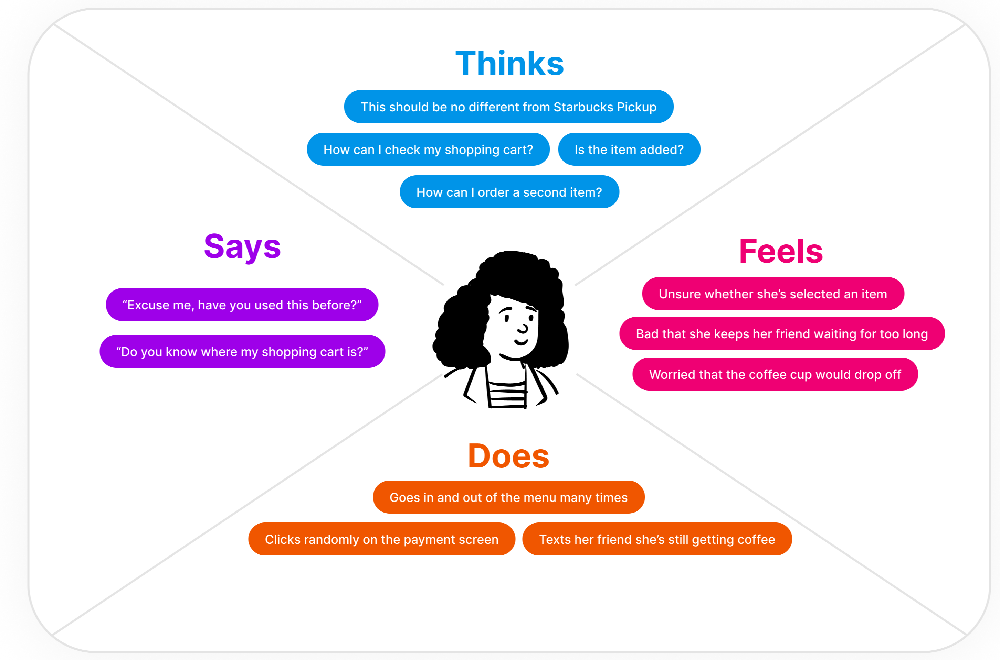
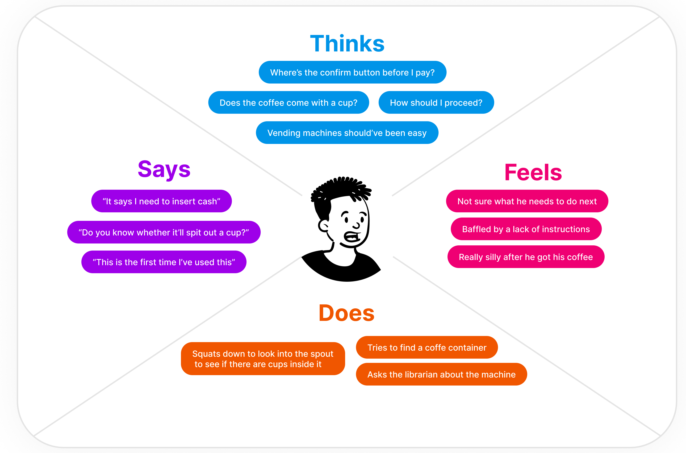
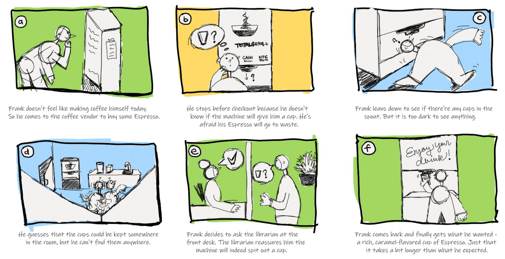

In this project, I observed three users interact with the Coffee Vendor located on the first floor of the Rockefeller Library to gain insights about their general behavior patterns. I also conducted interviews with the users to obtain context and thought processes of individual users. Finally, I created two personas by creating a four-quadrant empathy map to reflect the overarching trends I observed among the users, and storyboarded one persona's entire user journey with the vending machine.

The main interface of the Coffee Vendor is a large touch screen with an ordering software. On the right to the touch screen are slots for card swipe and cash insertion, and an NFC sensor for contactless payment. Other physical components include the cup holder and spout on the bottom of the machine. The ordering software has five main pages: (a) Welcome page, (b) Menu page where users can toggle between pages to select a drink, (c) Customization & Confirm page where users customize their drink and pay to confirm order, (d) Preparation page, during which a cup is popped out and held by the cup holder, (e) Ready page with a video demonstrating how to remove the cup from the holder.
👁🗨 Most users are able to quickly find the entry point (start button) of the interface.
👁🗨 Most users hesitate about what do to next after customizing their drink on the Customization & Confirm page. Some toggle back and forth between the Menu and the Customization & Confirm page.
👁🗨 Most users seem unprepared when the machine suddenly pops out the cup and holds it in the air.
👁🗨 Some users try to click on elements of the interface that are not interactive.
🎤 Most users are using the coffee vendor for the first time and aren't familiar with the entire process.
🎤 Most users aren't sure what to expect with the coffee cup, regardless of their past experience. One user who had experience with a similar machine finds it surprising that the Vendor holds the cup in the air while filling it; Another user with no experience with coffee vendors doesn't know a cup will be provided.
🎤 Some users find the logic of the checkout process to be counterintuitive; They expect a "Confirm" button before paying for the drink rather than the other way around.
🎤 Some users find it cumbersome to order multiple items as separate orders, wishing a shopping cart functionality could be added that allows them to order everything in one go.
🎤 Some users find the graphic illustration on the payment panel to be helpful.
👁🗨 Zilai swiftly entered the menu page by touching the start button.
👁🗨 Zilai paused at the Customization & Confirm page after selecting the drink he wanted.
👁🗨 Zilai circled around the room trying to find something.
👁🗨 Zilai squatted down and tried to see what's inside the spout from below.
👁🗨 Zilai went out to ask the librarian whether the machine would give you a cup; Went back to pay for his coffee after getting an affirmative answer.
Q1. Have you used this coffee vendor (or similar machines of this type) before?
No I've never used it. I have used other vending machines - but those were like - they sold sodas in plastic bottles.
Q2. What do you like about the interface? Which part of your user experience made most sense to you?
Emm... (long pause), I like the panel on the right with the drawn figures. It tells you clearly what to do. At first I thought the machine only accepted cash because there's a line on the screen that says "Please insert correct amount". But then I saw the NFC icon on the right, so I knew I could actually use NFC.
Q3. What do you dislike about the interface? Which part of the user experience did you find most bothering or counter-intuitive?
Well, I didn't know whether it would give me a cup. I was trying to find a cup near the machine - but it wasn't there. I've never used this machine before so I didn't know what to expect: Does the coffee come with a cup or does it just come straight out like a regular coffee machine?
👁🗨 Liam swiftly entered the menu page by touching the start button.
👁🗨 Liam went back and forth between menu pages to find what he wanted.
👁🗨 Liam seemed to hesitate for a short period at the Customization & Confirm page, but eventually tapped his phone on the NFC icon to pay.
👁🗨 Liam squatted down a little to check what happened when the cup suddenly popped out during Preparation; Placed his hand below the cup to keep it from falling out of the holder.
Q1. Have you used this coffee vendor (or similar machines of this type) before?
I used a similar type of drink vending machine back in Taiwan, but I haven't used this particular machine before.
Q1. (Optional follow-up). What are the noticeable differences in your user experience with this machine vs. the ones you used before?
The ones I used back then didn't support credit cards, so that was new to me. Also this one really surprised me when it just held the cup in the air. In Taiwan those machines actually placed the cup on a platform before they put drink in it, and there were windows shielding everything so the drink won't spill.
Q2. What do you like about the interface? Which part of your user experience made most sense to you?
I like the layout of the menu page. I'd much rather turn pages by clicking buttons rather than scrolling an incredibly long list. That's much more intuitive to me. Also the instructions of page turning are noticeable and easy to understand. It clearly says "More Drinks", "Previous Page" and such.
Q3. What do you dislike about the interface? Which part of the user experience did you find most bothering or counter-intuitive?
When it just popped out a cup and held it in the air. I would expect the cup to be placed on the platform below - And, when I tried to remove the cup, although the screen showed you how to do it, the holder was so tight and the cup was so full I suspected I did something wrong there. I hoped it could maybe be a little looser, or had some motion sensor that let it grasp a little looser when you tried to remove it.
👁🗨 Mark swiftly entered the menu page by touching the start button.
👁🗨 Mark quickly selected one cup of drink and paused after he finished customization; Went back to the menu page, and selected the same drink again.
👁🗨 Mark looked confused and tried clicking on the "Price $X.XX" text at the bottom of the Customization & Confirm page to no avail.
👁🗨 Mark payed for the drink he selected, removed it when it's done, then went back to order a different drink. This time with no noticeable hesitation.
Q1. Have you used this coffee vendor (or similar machines of this type) before?
No, I haven't. But I have bought coffee on similar machines before.
Q1. (Optional follow-up). What are the noticeable differences in your user experience with this machine vs. the ones you used before?
I used to order on a platform that keeps track of what you added to your shopping cart. So I could add multiple items in the cart and customized them freely. This one didn't seem to have any concept of a shopping cart. I tried to order a drink for my friend in addition to mine. But I guessed you just had to order twice on this.
Q2. What do you like about the interface? Which part of your user experience made most sense to you?
The whole aesthetics of the interface is pretty nice, like, the design is pretty modern in my opinion.
Q3. What do you dislike about the interface? Which part of the user experience did you find most bothering or counter-intuitive?
I guess I was a bit confused after the customization part cause I expected it to have a "add to cart" button or something like that. I went back to the menu to see if my drink's been added to a cart but couldn't find anything. Another thing I found pretty counterintuitive was that the "Make This Drink" button only appeared after you payed for the drink. I mean, to me the button is so much easier to understand cause it tells you how to proceed. Why not just show the button first and then ask the user to pay for the drink?
Joy has lots of friends and is very nice to them. She always likes to buy another cup for her friends when she orders her coffee with Starbucks Pickup. Today she's rushing to meet one of them so she decides to buy two cups of coffee at the Coffee Vendor. Joy represents the user group who have previous experience of ordering coffee through a digital platform but have not used coffee vendors before.

Frank is a coffee lover who makes himself coffee with his coffee machine daily. Today he feels a bit too lazy for that and decides to go to the Coffee Vendor instead. He hasn't used this type of device before but he thinks it won't be that much different from the coffee machine he uses everyday. Frank represents the user group who regularly make coffee themselves and are more used to interacting with a regular coffee machine.

